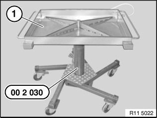
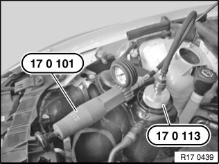
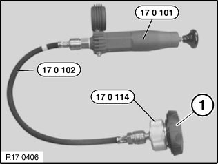

Component Tests and General Diagnostics
17 00 009 Checking cooling system for watertightnessSpecial tools required:
Warning!
Risk of scalding!
Only perform this repair work after engine has cooled down.
Protective measures/rules of conduct:
^ Wear safety goggles
^ Wear protective gloves
^ Observe national/country-specific regulations

Important!
Risk of skidding due to coolant on the floor.
Risk of injury!
Catch and dispose of drained coolant in drip tray (1) and if necessary special tool 00 2 030 (universal hydraulic lifting equipment).
Recycling:
Observe country-specific waste disposal regulations.

Checking pressure drop in cooling system:
Open the sealing cap on the coolant expansion tank. Fit special tool 17 0 101 / 17 0 113.
Build up excess pressure, wait approx. 2 minutes.
Cooling system is impervious to watertightness if pressure drop is max. 0.1 bar.
Checking pressure relief valve in sealing cap:
Note:
While the driving at high ambient temperatures, the design may cause the pressure relief valve in the sealing cap to open slightly and air together with dissolved coolant to escape. This coolant vapor condenses on the surface of the expansion tank and leaves toes when the vehicle has cooled down. These toes do not indicate whether the sealing cap is defective or not. When the vehicle has been parked up for an extended period of time, the residual escaping coolant can cause the pressure relief valve in the sealing cap to stick; therefore check the sealing cap again 2 to 3 times.
Replace the sealing cap only after you have checked three times and there is an incorrect opening pressure.

Checking pressure relief valve in sealing cap:
Screw sealing cap (1) onto special tool 17 0 114.
Build up pressure with special tool (hand pump) 17 0 101; observe pressure gauge to ascertain when opening pressure is achieved.
Compare opening pressure of pressure relief valve.
17 00 009 Checking cooling system for watertightness
Special tools required:
Warning!
Risk of scalding!
Only perform this work after engine has cooled down.
Protective measures/rules of conduct:
^ Wear safety goggles
^ Wear protective gloves
^ Observe national/country-specific regulations

Important!
Risk of slipping due to coolant on the floor.
Risk of injury!
Catch and dispose of drained coolant in drip tray (1) and if necessary special tool 00 2 030 (universal hydraulic lifter).
Recycling:
Observe country-specific waste disposal regulations.

Checking pressure drop in cooling system:
Open cap on coolant expansion tank. Fit special tool 17 0 101 / 17 0 113.
Build up excess pressure, wait approx. 2 minutes.
Cooling system is impervious to leaks if pressure drop is max. 0.1 bar.
Checking pressure relief valve in cap:
Note:
While the vehicle is driven at high outside temperatures, the design may cause the pressure relief valve in the cap to open slightly and air together with dissolved coolant to escape. This coolant vapor condenses on the surface of the expansion tank and leaves traces when the vehicle has cooled down. These traces do not indicate whether the cap is defective or not. When the vehicle has been parked up for an extended period of time, the residual escaping coolant can cause the pressure relief valve in the sealing cap to stick; therefore check the cap again 2 to 3 times.
Replace the cap only after you have checked three times and there is an incorrect opening pressure.

Checking pressure relief valve in cap:
Screw cap (1) onto special tool 17 0 114.
Build up pressure with special tool (hand pump) 17 0 101; observe pressure gauge to ascertain when opening pressure is achieved.
Compare opening pressure of pressure relief valve.